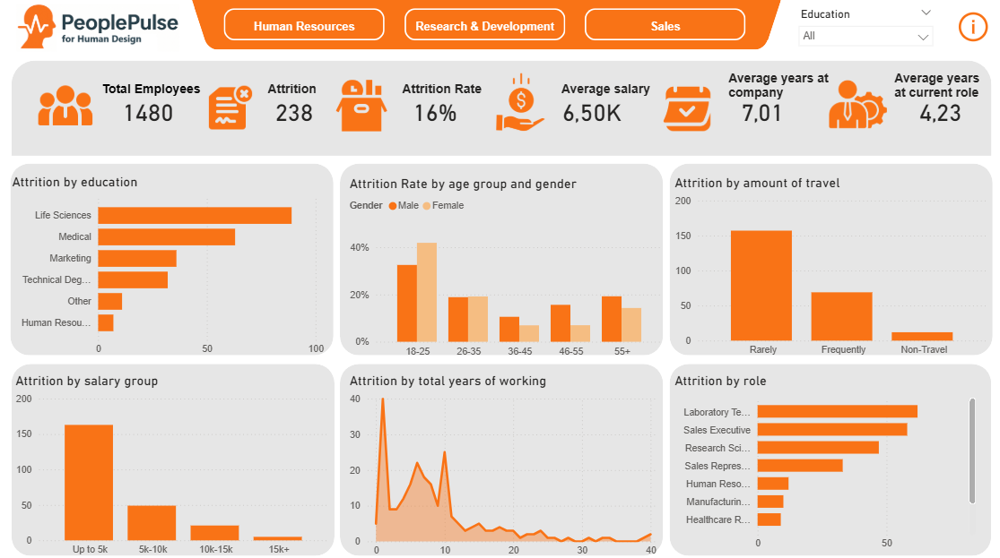

Have a look at recent projects that I have completed
Hospital data analysis
A datadriven exploration of hospital quality ratings across the United States, using Python to uncover patterns, trends, and factors that influence healthcare performance.

HR Attrition dashboard
An interactive HR analytics dashboard designed to explore attrition data at PeoplePulse, uncovering the factors behind employee turnover and supporting strategic HR planning.

KTM Product Catalogue
A product catalogue developed of the in Microsoft Power BI, providing a clean and interactive overview of available models, helping users make informed purchasing decisions through intuitive visualizations..
Stride Bikes sales dashboard
An interactive dashboard designed for Stride Bikes, offering real-time insights into sales performance and helping identify growth opportunities across regions and products.
Looking for a data expert who can turn your data into actionable insights?
Let's talk to see what I can do for you!